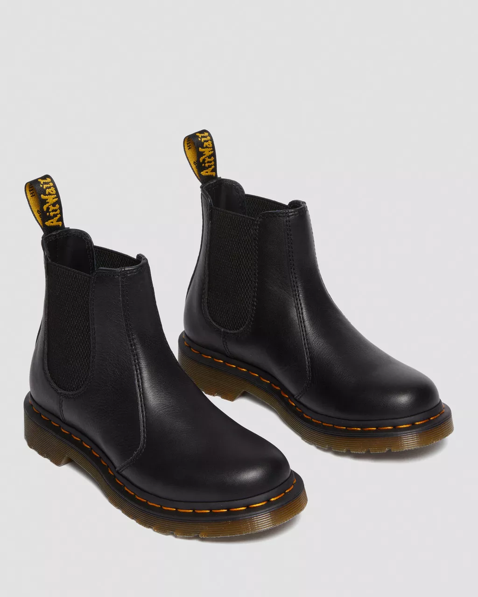

Dr. Martens
 2976 Women's Leather Chelsea BootsDetails
The classic 2976 Chelsea boot designed for an easier wear in. Constructed from fine-grain Virginia, a soft leather with little break-in required but the durability you can expect from DM’s. Built on an AirWair sole secured with our iconic yellow welt stitch. Finished with our easy-on elasticated gusset and scripted heel loop.
Materials
Virginia - a soft, fine-grain leather that is treated to feel smooth and supple, our Virginia Leather is typically dyed, and is offered in a variety of bright colors.
Care
Wipe away dirt using a damp cloth. Apply Dr. Martens Wonder Balsam to the outside of your footwear to keep the leather supple, strong and smooth. Once dry, buff vigorously to desired shine using a clean Dr. Martens Shoe Brush. Repeat regularly to prolong the life of your footwear.
Construction
Goodyear Welted - the upper and sole are heat-sealed and sewn together, providing more comfort and durability for years to come.